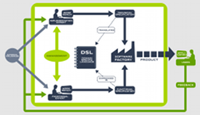
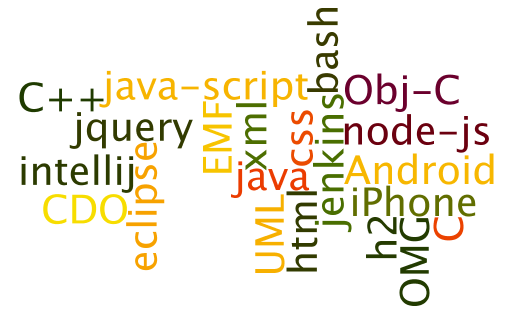

Contact
What can we do for you? Wat kunnen wij voor u betekenen?
We are experts in the field of building software factories. We take software factories to the next level. We make software factories that really automate the production of your software, not merely facilitate your developers. The result is a shorter time-to-market, an improved quality and a boost in agility. We let your domain knowledge drive your software development, thereby bridging the gap between business and IT. Changes to functional and technical requirements are quickly and seamlessly translated into new software versions. We build software factories that fit the best practices and languages spoken in your organisation.
Wij zijn experts op het gebied van software factories. Wij brengen software factories op een geheel nieuw nivo. Wij maken software factories die uw software productie echt automatiseren en niet alleen de ontwikkelaars ondersteunen. Het resultaat is een kortere time-to-market, een verbeterde kwaliteit en een verhoogde agility. We zorgen ervoor dat uw domein kennis de software ontwikkeling aanstuurt waardoor de kloof tussen business en IT overbrugd wordt. Verandering in zowel functionele als technische eisen worden snel en naadloos vertaald naar nieuwe software versies. We bouwen software factories die aansluiten op de best practices en de taal die in uw organisatie gebruikt worden.
Years of experience Jarenlange ervaring
All members of the Modeling Value Group B.V. have 15+ years experience in building software factories.
Alle leden van de Modeling Value Group B.V. hebben meer dan 15 jaar ervaring met het bouwen van software factories.
Advice_ Advies
Please contact us for questions or making an appointment. We love to investigate with you whether our methodology is suitable for your organisation.
U kunt altijd contact met ons opnemen voor vragen en het maken van een afspraak. We kijken graag samen met u of onze methodology bij u past.
Automation of Software Production: Software Factories Automatisering van Software Productie: Software Factories
The benefits of automating software production in general are evident: predictability, efficiency and quality. After many years of experience in this area, we know the main success factors of software factories:
De voordelen van het automatiseren van het software productie proces in het algemeen zijn evident: voorspelbaarheid, efficientie en kwaliteit. Na vele jaren van ervaring op dit gebied, kennen we de belangrijkste succesfactoren van software factories:
- separation of the functional and technical specification
- cleverly chosen functional variability suiting the domain at hand
- flexible software generators for a maintainable software architecture
- parallel, incremental and iterative software production
- continuous integration
- automated testing
- automated delivery
- scheiding van de functionele en technische specificaties
- slim gekozen functionele variabiliteit die voldoet aan het betreffende domein
- flexibele software generatoren voor een onderhoudbare software architectuur
- parallelle, incrementele en iteratieve software productie
- continuous integration
- automated testing
- automated delivery
A software factory has two very distinct inputs: the functional specification and technical production rules. The functional specification defines the functionality from the user perspective. The production rules define how the functional specification is translated into the final software.
Een software factory heeft twee zeer verschillende inputs: de functionele specificatie en technische productie regels. De functionele specificatie definieert de functionaliteit van het gebruikers perspectief. De productie regels bepalen hoe de functionele specificatie wordt vertaald in de uiteindelijke software.
Next level software factories Next level software factories
We can significantly optimize your software development process by creating a next level software factory geared to your organization. The factory will consist of tools that are tailored to the language spoken in your organization and the roles that exist within your software development process. The essential addition is the separation of technical and functional specifications. Your software factory will produce software that meets your requirements not the needs of the tool builder.
Wij kunnen uw software ontwikkel traject van uw organisatie aanzienlijk optimaliseren door het toepassen van ons next level software factory concept. De fabriek zal bestaan uit tools die zijn afgestemd op de taal die u in uw organisatie spreekt en de rollen die er binnen uw software ontwikkel proces zijn. De essentiële toevoeging is de scheiding van technische en functionele aspecten. Uw software fabriek gaat software maken die aan uw eisen voldoet, niet aan die van de tool bouwer.
Componenten Components
|
A next level software factory includes: Een next level software factory bestaat uit:
|
 |
{kind=link}
Contact information Modeling Value Group B.V. Contact informatie Modeling Value Group B.V.
You can reach us by mail:
U kunt ons bereiken per mail:
You can reach us by phone (Ronald will answer):
U kunt ons telefonisch bereiken (Ronald neemt op):
+31-6-414.57.477
We are based in The Netherlands:
We werken vanuit Nederland:
Passiebloemweg 18, 3452 CZ Utrecht
Chamber of Commerce:
KvK:
63653079
VAT:
BTW:
NL855335828B01
Bank:
Bank:
iban NL47INGB0008119238 - bic INGBNL2A
What else do we do Wat we nog meer doen
We are experts in many software areas with 100+ years of experience in total. A random selection from our expertise:
Wij zijn software experts op vele gebieden met samen meer dan 100 jaar ervaring. Een willekeurige greep uit onze expertise:

Dclare
We are currently building an open source declarative programming language named "Dclare". Please check out our separate website.
We realiseren momenteel onze eigen open source declaratieve programmeertaal: "Dclare". Kijk op de aparte website voor dit project.
Who are we Wie zijn wij
| Wim Bast | |
| Tom Brus | |
| Ronald Krijgsheld |